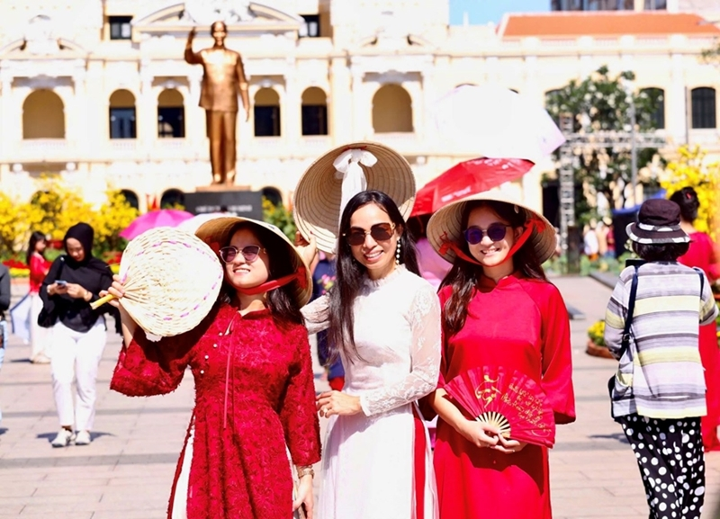

VIETNAM’S URBAN TOURISM

Vietnam’s cities blend modernity, history, and culture, offering diverse experiences for visitors, from historical landmarks to bustling nightlife and culinary adventures.
1. Historical and Cultural Landmarks
| Hanoi |
Ho Chi Minh City |
Hue |
|
Hoan Kiem Lake, Ho Chi Minh Mausoleum, Temple of Literature.
|
Notre-Dame Cathedral, Central Post Office, War Remnants Museum.
|
Imperial Citadel and royal tombs.
|
2. Modern Architecture and Skyscrapers
| Landmark 81 (Ho Chi Minh City) |
Sun Wheel (Da Nang) |
|
Vietnam’s tallest building with observation decks and luxury facilities.
|
Panoramic city views and entertainment complexes.
|
Modern districts like Hanoi’s West Lake area and Saigon’s District 1 are hubs for luxury hotels, shopping, and urban exploration.
4. Culinary Experiences in the City
|
Bun Cha, Pho, Egg Coffee; rooftop bars and street food tours for immersive dining.
|
Banh Mi, Com Tam, Vietnamese fusion cuisine; riverside restaurants and urban food experiences.
|
5. Entertainment, Nightlife, and Cultural Shows
Traditional water puppetry in Hanoi, ao dai fashion shows, live music venues.
Nightlife includes rooftop bars, clubs, and music in Ho Chi Minh City, blending international trends with local culture.